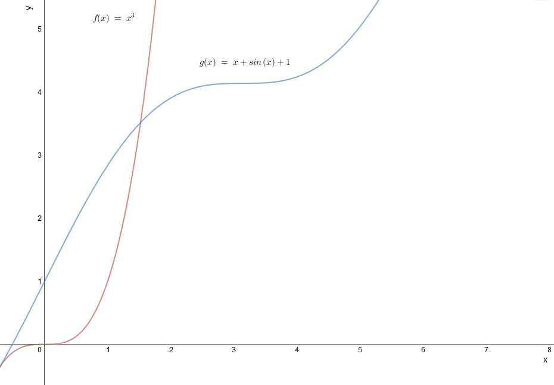

We have
\begin{align*} x^3 = x + \sin (x) + 1 &\iff x^3 - x - \sin (x) - 1 = 0. \end{align*}
Define \(f(x) = x^3 - x - \sin (x) - 1\).
Since:
\(f(0) = (0)^3 - (0) - \sin (0)-1 = -1\) and
\(f(\pi ) = \pi ^3 - \pi - \sin (\pi )-1 = \pi (\pi ^2 - 1) - 1 > 3 \cdot (3^2 - 1) - 1 = 23\)
We have: \(-1<0<23\)
and \(f\) is continuous on \([0, \pi ]\), the Intermediate Value Theorem implies there is some \(c\) with \(0 < c < \pi \)
such that \(f(c)=L= 0\), that is, \(c^3 = c + \sin (c) + 1\). That \(c\) is a solution on the interval \([0,\pi ]\). (Note: There are many
possible intervals, e.g. \([1,4]\), etc. )
